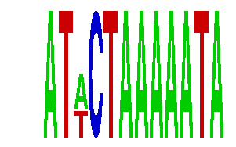

family_2 |
|---|
|  |
| Download PWM |
| Download instances (motifs) |
| Show motif distribution |
Query_ID | Query_Consensus | Subject_Name | Source_DB | Subject_ID | Length | Orientation | Offset | Divergence | Overlap | Subject_Consensus |
|---|---|---|---|---|---|---|---|---|---|---|
| family_2 | ATACTAAAAATA | TAAWWATAG | JASPAR | PF0054 | 9 | as given | 4 | 0.288 | 8 | TAAAAATAG |
| family_2 | ATACTAAAAATA | MEF2A | JASPAR | MA0052.1 | 10 | reverse-complement | 3 | 0.593 | 9 | CTATTTATAG |
| family_2 | ATACTAAAAATA | CTAWWWATA | JASPAR | PF0028 | 9 | as given | 3 | 0.671 | 9 | CTATAAATA |
| family_2 | ATACTAAAAATA | YTATTTTNR | JASPAR | PF0033 | 9 | reverse-complement | 4 | 0.717 | 8 | TTATTTTNA |
Sequence | Start_position (from start) | Start_position (from end) | Average conservation | Best conservation score | Instance_with_best_CS | Best_Z-score | Instance_with_best_ZS | Strand |
|---|---|---|---|---|---|---|---|---|
| chr15:76946500-76948697 | 1206 | 1218 | 0.0025 | 0.01 | ATWCKAAAAATA | 14.270282 | ATWCTAAAAATA | -1 |
| chr2:59202000-59204100 | 583 | 595 | 0.000333333 | 0.002 | ATWCKAAAAATA | 14.270282 | ATWCTAAAAATA | 1 |
| chr19:56607200-56609200 | 836 | 848 | 0.138417 | 0.202 | ATWCTAAAAATA | 14.270282 | ATWCKAAAAATA | 1 |
| chr15:89245000-89247100 | 947 | 959 | 0.0369167 | 0.047 | ATWCKAAAAATA | 14.270282 | ATWCTAAAAATA | 1 |
| chr11:87048472-87049472 | 707 | 719 | 0.303 | 0.545 | ATWCKAAAAATA | 14.270282 | ATWCTAAAAATA | -1 |
| chr9:28832471-28833471 | 867 | 879 | 0.00108333 | 0.003 | ATWCTAAAAATA | 14.270282 | ATWCKAAAAATA | 1 |
| chr13:98922400-98924100 | 701 | 713 | 0.01075 | 0.015 | ATWCKAAAAATA | 14.270282 | ATWCTAAAAATA | -1 |
| chr2:102143300-102144800 | 772 | 784 | 0.419583 | 0.843 | ATWCTAAAAATA | 14.270282 | ATWCKAAAAATA | 1 |
| chr7:129185500-129186700 | 462 | 474 | 0.00475 | 0.011 | ATWCTAAAAATA | 14.270282 | ATWCKAAAAATA | 1 |
| chr4:13200600-13201942 | 1141 | 1153 | 0.0253333 | 0.048 | ATWCKAAAAATA | 14.270282 | ATWCTAAAAATA | 1 |
| chr6:53456300-53460300 | 3057 | 3069 | 1 | 1 | ATWCKAAAAATA | 14.270282 | ATWCTAAAAATA | -1 |
| chr9:24767135-24768900 | 859 | 871 | 0.850583 | 0.878 | ATWCTAAAAATA | 14.270282 | ATWCKAAAAATA | 1 |
| chr8:41989700-41991437 | 1555 | 1567 | 0.02775 | 0.069 | ATWCTAAAAATA | 14.270282 | ATWCKAAAAATA | 1 |
| chr5:93202500-93203900 | 576 | 588 | 0.0025 | 0.006 | ATWCKAAAAATA | 14.270282 | ATWCTAAAAATA | 1 |